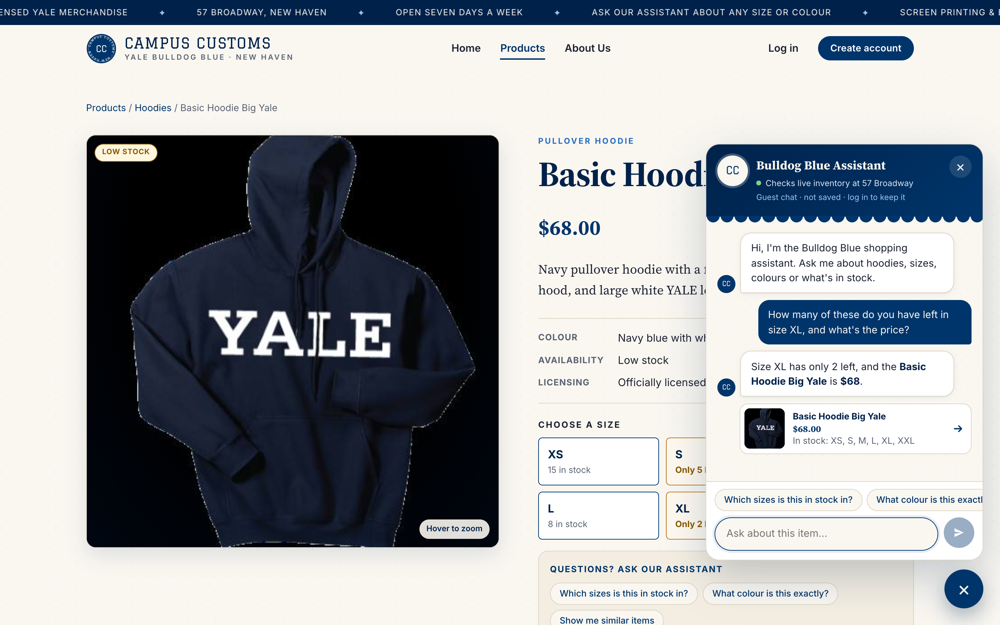
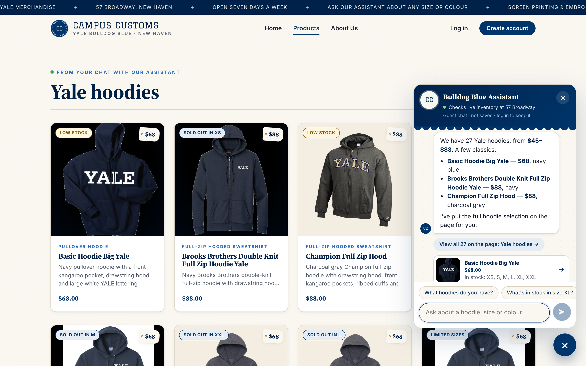
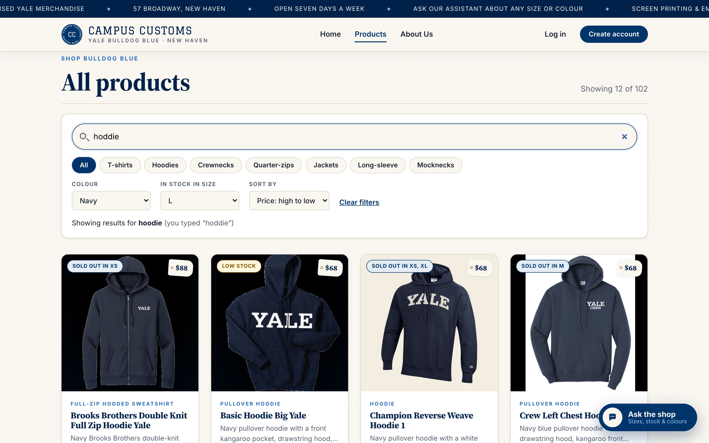

Chat checking the inventory level of an item

inventory XL = 2, catalogue price = $68.00), and the product card under the reply is built by the server from those same rows, so the chat reports real stock and price rather than guessing.
Dynamic search-result cards after a category question (hoodies)

page_results, and the site switched to the Products page and rendered all 27 hoodies as cards with image, name, price and short description (the database has exactly 27 hoodies, priced $45–$88 as the reply says). Clicking the first card the chat placed on the page opened its single-item page (/products/basic-hoodie-big-yale), confirming the Problem 3 detail view still works for chat-generated cards.
Usability feature from Problem 9: filter, sort and search bar (F1)

/products?q=hoddie&size=L&colour=Navy&sort=price-desc) so Back and bookmarks restore the view. The misspelled search “hoddie” was read as “hoodie” by the typo-tolerant search (B2) and flagged on screen, and the count of 12 matches the database's navy hoodies with size L in stock.